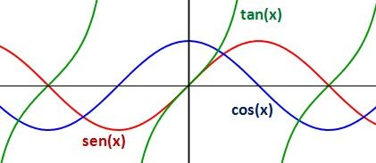
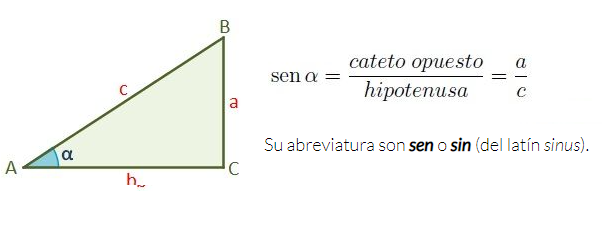
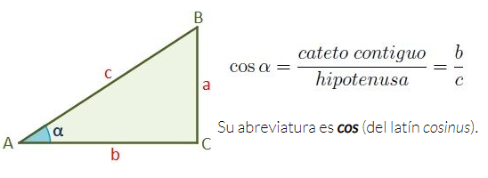
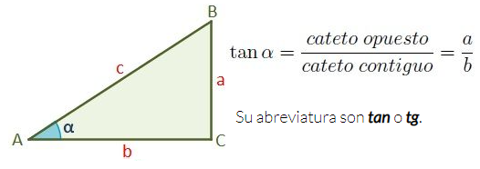
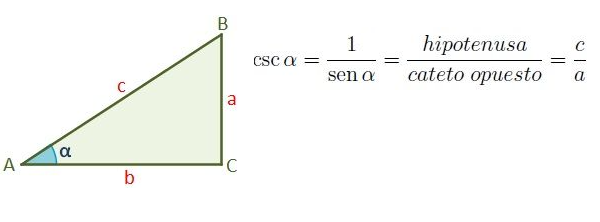

Manual de la asignatura
Funciones Matemáticas
Plantear y solucionar problemas con base en los principios y teorías de física, química y matemáticas, a través del método científico para sustentar la toma de decisiones en los ámbitos científico y tecnológico.
Segundo
41
19
60
4
El alumno desarrollará modelos matemáticos empleando las herramientas de geometría, trigonometría, geometría analítica y álgebra vectorial para contribuir a la solución de problemas de su entorno y las ciencias básicas.
Evaluación
Saber
Más
Saber hacer
Más
Ser
Bibliografía
TEMA 1 - Geometría
La geometría es una parte de la matemática que se encarga de estudiar las propiedades y las medidas de una figura en un plano o en un espacio.

Entre las distintas corrientes de la geometría, se destaca la geometría algorítmica, que usa el álgebra y sus cálculos para resolver problemas vinculados a la extensión.
La geometría descriptiva, por su parte, se dedica a solucionar los problemas del espacio mediante operaciones que se desarrollan en un plano donde están representadas las figuras de los sólidos.
La geometría analítica se encarga de estudiar las figuras a partir de un sistema de coordenadas y de las metodologías propias del análisis matemático.
TEMA 2 - Ángulos y triángulos
Click para acceder a una presentación del tema

TEMA 3 - Funciones trigonométricas
las funciones trigonometricas f son aquellas que están asociadas a una razón trigonométrica.
Las razones trigonométricas de un ángulo α son las obtenidas entre los tres lados de un triángulo rectángulo. Es decir, las comparaciones por su cociente de sus tres lados a, b y c.
Existen seis funciones trigonométricas:
El seno de un ángulo α se define como la razón entre el cateto opuesto (a) y la hipotenusa (c).
El coseno de un ángulo α se define como la razón entre el cateto contiguo o cateto adyacente (b) y la hipotenusa (c).
La tangente de un ángulo α es la razón entre el cateto opuesto (a) y el cateto contiguo o cateto adyacente (b).
La cosecante del ángulo α de un triángulo rectángulo se define como la razón entre la hipotenusa (c) y el cateto opuesto (a).
TEMA 1 - Recursos
Te recomiendo utilizar éste libro para comenzar con el tema nuevo